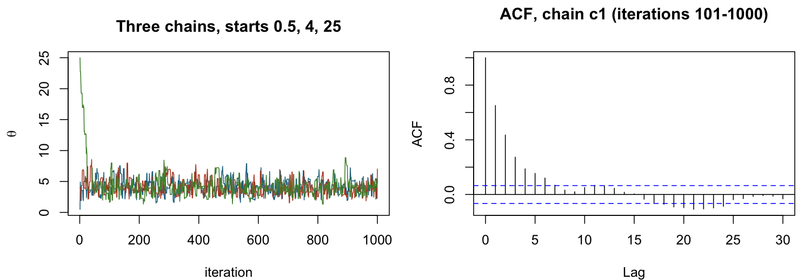

Topic 5 mixed review: a Bayes question cold, at exam pace
Lessons 22–27 taught each piece of the Bayes question alone: posterior, Monte Carlo, Metropolis–Hastings, Gibbs, diagnostics, CAVI. This lesson puts them back together on models you haven't seen: Normal data from two instruments with an Inverse-Gamma variance, a hierarchical prior (the gap Lesson 25 left), a rejection sampler with chain output, and twelve short items that mix Topic 5 with Topics 1–4. The win: finish a full 17-mark Bayes question cold in about 40 minutes, with every line a marker wants to see.
Close Lessons 22–27, the Bayes cheat sheet and the slides. Paper, pen and an FX-82 only. Set a 40-minute timer for Part A, 25 minutes for Part B and Part C together. Write your answer before you open any fold. Every wrong first try is useful: the table in §7 says which lesson to go back to. Open the cheat sheet only after scoring, to see what you forgot.
1 · Recall first (5 minutes)
On a blank page, write from memory:
- Bayes' rule with \(\propto\), what you drop, and the four conjugate results: Normal mean with known precision, Normal precision with known mean, Normal variance with an Inverse-Gamma prior, Poisson rate with a Gamma prior.
- The four-step recipe for a full conditional. Which factor do people drop by mistake, and which shape do they get wrong?
- A Gibbs scheme in numbered steps, and why it has no accept/reject step.
- The MH acceptance probability, the order you evaluate the factors, the direction of the proposal ratio, and when it cancels. What is the extra factor for a random walk on \(\log\tau\)?
- Rejection sampling: the accept rule, the smallest \(M\), the acceptance probability, and what changes when the proposal is the prior.
- The difference between the MC standard error and the MCMC standard error; the ESS formula; the \(\hat R\) rule and its threshold; how you choose burn-in.
- The CAVI rule, the ELBO identity, the trick for \(E_\mu[(c-\mu)^2]\), and what differs between an independent prior on \(\mu\) and the joint prior \(\mu\mid\tau\).
- Two things VI does better than MCMC, and the one thing it does worse.
Check your page
1. \(p(\theta\mid x)\propto p(x\mid\theta)p(\theta)\); drop every factor free of \(\theta\), including \(p(x)\) (Lesson 22). Normal mean: \(N(m_n,1/\kappa_n)\), \(\kappa_n=\kappa_0+n\tau\), \(m_n=(\kappa_0m_0+n\tau\bar x)/\kappa_n\). Precision: Gamma\((a+n/2,\ b+\sum(x_i-\mu)^2/2)\). Variance, Inv-Gamma\((a,b)\): Inv-Gamma\((a+n/2,\ b+\sum(x_i-\mu)^2/2)\). Poisson: Gamma\((a+\sum y_i,\ b+n)\).
2. Write the joint; keep factors containing the parameter; recognise the kernel; name it with parameters (Lesson 25 §2). Dropped by mistake: \(\tau^{n/2}\) (and the \(\sqrt\tau\) from a prior \(\mu\mid\tau\)). Wrong shape: \(a+n/2\) vs \(a+(n+1)/2\).
3. Initial values; for \(t=1,\dots,T\) draw each parameter from its full conditional using the newest values of the others; discard burn-in; average over the rest. Each proposal is an exact conditional, so the MH ratio is 1.
4. \(\alpha=\min\{1,\ \frac{\pi(\theta^*)}{\pi(\theta^c)}\cdot\frac{q(\theta^c\mid\theta^*)}{q(\theta^*\mid\theta^c)}\}\); ledger: likelihood, then each prior, then the proposal ratio, reverse over forward; it cancels for a symmetric (random-walk Normal) proposal. Log-scale walk: extra factor \(\tau^*/\tau^c\) (Lesson 24).
5. Draw \(X\sim g\), \(U\sim U(0,1)\); accept if \(U\le\tilde f(X)/(Mg(X))\). \(M=\sup\tilde f/g\) by calculus. Acceptance probability \(Z/M\) with \(Z=\int\tilde f\). Prior as proposal: \(M=\) max likelihood (Lesson 23).
6. MC SE \(=\text{sd}/\sqrt N\) for independent draws (or \(\sqrt{\hat p(1-\hat p)/N}\)); MCMC SE \(=s/\sqrt{\text{ESS}}\), \(\text{ESS}\approx n(1-\hat\rho_1)/(1+\hat\rho_1)\). \(\hat R=B/W\) (pooled sd over mean within-chain sd), \(<1.05\). Burn-in: where several overdispersed chains overlap (Lesson 26).
7. \(q^*_j\propto\exp\{E_{-j}[\log p(\theta,x)]\}\); \(\log p(x)=\text{ELBO}+\text{KL}\); \(E_\mu[(c-\mu)^2]=(c-E[\mu])^2+V[\mu]\). Joint prior: shape \(a+\frac{n+1}2\), \(\mu\) precision \((\kappa_0+n)E[\tau]\); independent prior: shape \(a+\frac n2\), precision \(\kappa_0+nE[\tau]\) (Lesson 27).
8. Faster, deterministic and scales to big data; but it underestimates the posterior variance (mean-field ignores dependence) and finds only a local optimum.
Fewer than 6 of 8 fully right? Reread the Bayes cheat sheet once, close it, then start Part A.
2 · Part A: exam-length Bayes question (17 marks, 40 minutes)
Question A (17 marks). A lab measures a coating thickness \(\mu\) (microns) with two instruments. Instrument 1 gives \(x_1,\dots,x_n\) and the less precise instrument 2 gives \(y_1,\dots,y_m\). Given \((\mu,\sigma^2)\), all measurements are independent.
Model:
$$x_i\mid\mu,\sigma^2\sim\text{Normal}(\mu,\ \sigma^2),\qquad y_j\mid\mu,\sigma^2\sim\text{Normal}(\mu,\ 2\sigma^2).$$Prior: \(\mu\) and \(\sigma^2\) are independent a priori, with
$$\mu\sim\text{Normal}(2,\ 1),\qquad\sigma^2\sim\text{Inverse-Gamma}(3,\ 2)\quad\text{(shape, scale)}.$$The data are \(x=(2.1,\ 1.7,\ 2.6,\ 1.9)\) (so \(n=4\), \(\sum x_i=8.3\)) and \(y=(2.8,\ 1.4)\) (so \(m=2\), \(\sum y_j=4.2\)). Normal\((\text{mean},\text{variance})\); Gamma(shape \(\nu\), rate \(\beta\)) has density \(\frac{\beta^\nu}{\Gamma(\nu)}x^{\nu-1}e^{-\beta x}\) for \(x>0\), with \(\Gamma(4)=6\).
(a) Derive the conditional distribution \(p(\mu\mid\sigma^2,x,y)\). If it is a known distribution, identify the distribution name and its parameters. [5]
(b) We use Metropolis–Hastings for \((\mu,\sigma^2)\). For the current values \((\mu^c,\sigma^{2c})\) propose new values \((\mu^*,\sigma^{2*})\) as follows: first \(\sigma^{2*}\sim\text{Gamma}\big(\text{shape}=4,\ \text{rate}=4/\sigma^{2c}\big)\), then \(\mu^*\sim\text{Normal}\big(\text{mean}=\mu^c,\ \text{variance}=\sigma^{2*}/2\big)\). Compute the acceptance probability when \((\mu^c,\sigma^{2c})=(2.0,\ 0.5)\) and \((\mu^*,\sigma^{2*})=(2.4,\ 0.4)\). Show your work. [6]
(c) Approximate the posterior by \(q(\mu,\sigma^2)=q_\mu(\mu)\,q_{\sigma^2}(\sigma^2)\), chosen by coordinate ascent variational inference, \(q^*_j(\theta_j)\propto\exp\{E_{-j}[\log p(x,y,\mu,\sigma^2)]\}\). Derive \(q^*_{\sigma^2}(\sigma^2)\). If it is a known distribution, identify its name and parameters; they may contain \(E_\mu[\mu]\) and \(V_\mu[\mu]\). Then evaluate them when \(E_\mu[\mu]=2.1\) and \(V_\mu[\mu]=0.05\), and give \(E[\sigma^2]\) under \(q^*_{\sigma^2}\). [6]
Pace guide: (a) 10 minutes, (b) 17, (c) 13. In (b) write the ledger first (one line per factor) and multiply at the end: unfinished arithmetic with a correct ledger still earns most of the marks.
A1. Part (a): at the current value \(\sigma^2=0.5\), give the mean of the full conditional of \(\mu\) (2 d.p.).
A2. Part (b): compute the \(\sigma^2\) proposal ratio \(q(\sigma^{2c}\mid\sigma^{2*})\big/q(\sigma^{2*}\mid\sigma^{2c})\) (2 d.p.).
A3. Part (c): at \(E[\mu]=2.1\), \(V[\mu]=0.05\), give \(E[\sigma^2]\) under \(q^*_{\sigma^2}\) (2 d.p.).
Now open the parts one at a time and mark yourself with the bracketed marks.
Part (a): the Gibbs conditional of \(\mu\) [5]
Keep only factors containing \(\mu\): both likelihoods and the prior of \(\mu\). The \(y\) variance is \(2\sigma^2\), so its exponent has \(4\sigma^2\) [1]:
$$\begin{aligned} p(\mu\mid\sigma^2,x,y)&\propto p(x\mid\mu,\sigma^2)\,p(y\mid\mu,\sigma^2)\,p(\mu)\\ &\propto\exp\Big\{-\frac1{2\sigma^2}\sum_{i=1}^n(x_i-\mu)^2\Big\}\exp\Big\{-\frac1{4\sigma^2}\sum_{j=1}^m(y_j-\mu)^2\Big\}\exp\Big\{-\frac12(\mu-2)^2\Big\} \end{aligned}$$Expand each square and collect \(\mu^2\) and \(\mu\) [1] (the \(\sigma^2\) factors \((\sigma^2)^{-n/2}\) etc. carry no \(\mu\) and are dropped):
$$\begin{aligned} \text{exponent}&=-\frac1{2\sigma^2}\Big[n\mu^2-2\mu\sum_ix_i\Big]-\frac1{4\sigma^2}\Big[m\mu^2-2\mu\sum_jy_j\Big]-\frac12\big[\mu^2-4\mu\big]+\text{const}\\ &=-\frac12\Big[\Big(\frac n{\sigma^2}+\frac m{2\sigma^2}+1\Big)\mu^2-2\Big(\frac{\sum_ix_i}{\sigma^2}+\frac{\sum_jy_j}{2\sigma^2}+2\Big)\mu\Big]+\text{const}\\ &=-\frac A2\mu^2+B\mu+\text{const} \end{aligned}$$ $$\begin{aligned} A&=1+\frac{n+m/2}{\sigma^2}=1+\frac5{\sigma^2}\\ B&=2+\frac{\sum_ix_i+\frac12\sum_jy_j}{\sigma^2}=2+\frac{8.3+2.1}{\sigma^2}=2+\frac{10.4}{\sigma^2} \end{aligned}$$[1] for \(A\) and \(B\). Complete the square and drop \(e^{B^2/(2A)}\) [1]:
$$\begin{aligned} p(\mu\mid\sigma^2,x,y)&\propto\exp\Big\{-\frac A2\Big(\mu^2-\frac{2B}A\mu\Big)\Big\}\\ &\propto\exp\Big\{-\frac A2\Big(\mu-\frac BA\Big)^2\Big\} \end{aligned}$$(a)
$$\mu\mid\sigma^2,x,y\ \sim\ \text{Normal}\Big(\frac{2\sigma^2+10.4}{\sigma^2+5},\ \frac{\sigma^2}{\sigma^2+5}\Big)$$[1] for the name with mean and variance (not precision). Check at \(\sigma^2=0.5\): mean \(11.4/5.5=2.07\), variance \(0.5/5.5=0.09\) (R, by numerical integration of the kernel on a grid: 2.0727, 0.0909). Precisions add: prior 1, instrument 1 contributes \(n/\sigma^2\), instrument 2 contributes \(m/(2\sigma^2)\).
Part (b): the acceptance probability [6]
State the rule and the target [1]. With \(Q(\mu)=\sum_i(x_i-\mu)^2+\tfrac12\sum_j(y_j-\mu)^2\), the target is likelihood \(\times\) priors; keep every power of \(\sigma^2\) (\((\sigma^2)^{-(n+m)/2}\) from the likelihood, \((\sigma^2)^{-3-1}\) from the Inverse-Gamma prior):
$$\begin{aligned} \alpha&=\min\Big\{1,\ \frac{\pi(\mu^*,\sigma^{2*})}{\pi(\mu^c,\sigma^{2c})}\cdot\frac{q(\mu^c,\sigma^{2c}\mid\mu^*,\sigma^{2*})}{q(\mu^*,\sigma^{2*}\mid\mu^c,\sigma^{2c})}\Big\}\\ \pi(\mu,\sigma^2)&\propto\underbrace{(\sigma^2)^{-3}e^{-Q(\mu)/(2\sigma^2)}}_{\text{likelihood}}\cdot\underbrace{e^{-(\mu-2)^2/2}}_{p(\mu)}\cdot\underbrace{(\sigma^2)^{-4}e^{-2/\sigma^2}}_{p(\sigma^2)} \end{aligned}$$The two values of \(Q\) (one line each):
$$\begin{aligned} Q(\mu^c)&=\big[0.1^2+0.3^2+0.6^2+0.1^2\big]+\tfrac12\big[0.8^2+0.6^2\big]=0.47+0.50=0.97\\ Q(\mu^*)&=\big[0.3^2+0.7^2+0.2^2+0.5^2\big]+\tfrac12\big[0.4^2+1.0^2\big]=0.87+0.58=1.45 \end{aligned}$$The three target factors, each "new over current" [2]:
$$\begin{aligned} \text{(i) likelihood}&=\Big(\frac{0.4}{0.5}\Big)^{-3}\exp\Big\{-\frac12\Big[\frac{1.45}{0.4}-\frac{0.97}{0.5}\Big]\Big\}\\ &=1.9531\,e^{-\frac12(3.625-1.94)}=1.9531\,e^{-0.8425}\\ &=1.9531\times0.4306=0.8411\\[4pt] \text{(ii) prior on }\mu&=\exp\Big\{-\frac12\big[(2.4-2)^2-(2.0-2)^2\big]\Big\}\\ &=e^{-0.08}=0.9231\\[4pt] \text{(iii) prior on }\sigma^2&=\Big(\frac{0.4}{0.5}\Big)^{-4}\exp\Big\{-2\Big[\frac1{0.4}-\frac1{0.5}\Big]\Big\}\\ &=2.4414\,e^{-1}=2.4414\times0.3679=0.8981 \end{aligned}$$The proposal ratio is reverse over forward. For \(\sigma^2\) [1] (rate \(8\) forward, \(10\) in reverse):
$$\begin{aligned} q(\sigma^{2*}\mid\sigma^{2c})&=\frac{8^4}{6}(0.4)^3e^{-8(0.4)}=1.7809\\ q(\sigma^{2c}\mid\sigma^{2*})&=\frac{10^4}{6}(0.5)^3e^{-10(0.5)}=1.4037\\ \text{(iv) }\sigma^2\text{ ratio}&=\frac{1.4037}{1.7809}=0.7882 \end{aligned}$$For \(\mu\) [1]: forward the variance is \(\sigma^{2*}/2=0.2\); in reverse the new state is \((\mu^*,\sigma^{2*})\) and the proposed one is \(\sigma^{2c}\), so the variance is \(\sigma^{2c}/2=0.25\). The squared step is \(0.4^2=0.16\) both ways:
$$\begin{aligned} \text{(v) }\mu\text{ ratio}&=\frac{(2\pi\,0.25)^{-1/2}e^{-0.16/(2\times0.25)}}{(2\pi\,0.2)^{-1/2}e^{-0.16/(2\times0.2)}}\\ &=\sqrt{\frac{0.2}{0.25}}\;e^{-0.32+0.40}\\ &=0.8944\times1.0833=0.9689 \end{aligned}$$Multiply, one factor per line, then take the minimum [1]:
$$\begin{aligned} 0.8411\times0.9231&=0.7764\quad(\text{likelihood}\times p(\mu))\\ 0.7764\times0.8981&=0.6973\quad(\times\,p(\sigma^2);\ \text{target ratio})\\ 0.6973\times0.7882&=0.5496\quad(\times\ \sigma^2\text{ proposal})\\ 0.5496\times0.9689&=0.5326\quad(\times\ \mu\text{ proposal})\\ \alpha&=\min\{1,\ 0.5326\}=\mathbf{0.53} \end{aligned}$$R check, with the proposal densities taken from dgamma and dnorm rather than my algebra (the target is written in logs):
> x <- c(2.1, 1.7, 2.6, 1.9); y <- c(2.8, 1.4) > logpi <- function(mu, s2) -7*log(s2) - (sum((x-mu)^2) + 0.5*sum((y-mu)^2))/(2*s2) - (mu-2)^2/2 - 2/s2 > lq_s <- function(new, cur) dgamma(new, shape = 4, rate = 4/cur, log = TRUE) > lq_m <- function(new, cur, s2new) dnorm(new, mean = cur, sd = sqrt(s2new/2), log = TRUE) > mc <- 2.0; sc <- 0.5; mn <- 2.4; sn <- 0.4 > tgt <- logpi(mn, sn) - logpi(mc, sc) > prp <- (lq_s(sc, sn) + lq_m(mc, mn, sc)) - (lq_s(sn, sc) + lq_m(mn, mc, sn)) > round(exp(c(target = tgt, proposal = prp)), 4) target proposal 0.6973 0.7637 > round(exp(min(0, tgt + prp)), 4) [1] 0.5326
The proposal factor is \(0.7882\times0.9689=0.7637\), as printed. Without it the answer would be \(\min\{1,0.6973\}=0.70\), complete-looking working that scores about half the marks. With the ratio inverted (forward over reverse) you get 0.91.
Marks guide (6). [1] \(\alpha\) with the proposal ratio and the target kernel; [2] the likelihood factor with its \((\sigma^2)^{-3}\), and the two priors; [1] \(\sigma^2\) proposal ratio with the rate changing; [1] \(\mu\) proposal ratio with the variance changing; [1] product and \(\min\). Typical losses: dropping \((\sigma^2)^{-3}\) or \((\sigma^2)^{-4}\) as if they were constants (−1 or −2); using \(\sigma^{2c}\) in the reverse \(\mu\) variance wrongly as \(\sigma^{2*}\) (−1); leaving out the proposal ratio entirely (−2).
Part (c): \(q^*_{\sigma^2}\) [6]
Log joint, one line per term [1]:
$$\begin{aligned} \log p(x,y,\mu,\sigma^2)&=-\frac{n+m}2\log\sigma^2-\frac{Q(\mu)}{2\sigma^2}\\ &\quad-\frac12(\mu-2)^2-(3+1)\log\sigma^2-\frac2{\sigma^2}+\text{const} \end{aligned}$$Keep only terms containing \(\sigma^2\) (the \(\mu\) prior goes into const), then take \(E_\mu\) [1]. Only \(Q(\mu)\) involves \(\mu\):
$$\begin{aligned} \log q^*_{\sigma^2}(\sigma^2)&=E_\mu\Big[-\Big(\frac{n+m}2+3+1\Big)\log\sigma^2-\frac{2+\frac12Q(\mu)}{\sigma^2}\Big]+\text{const}\\ &=-\Big(3+\frac{n+m}2+1\Big)\log\sigma^2-\frac{2+\frac12E_\mu[Q(\mu)]}{\sigma^2}+\text{const} \end{aligned}$$The trick [1]: \(E_\mu[(c-\mu)^2]=(c-E[\mu])^2+V[\mu]\) for each \(x_i\) and \(y_j\):
$$\begin{aligned} E_\mu[Q(\mu)]&=\sum_{i=1}^n\big[(x_i-E[\mu])^2+V[\mu]\big]+\frac12\sum_{j=1}^m\big[(y_j-E[\mu])^2+V[\mu]\big]\\ &=\sum_i(x_i-E[\mu])^2+nV[\mu]+\frac12\Big[\sum_j(y_j-E[\mu])^2+mV[\mu]\Big] \end{aligned}$$The kernel is \((\sigma^2)^{-(\text{shape})-1}e^{-\text{scale}/\sigma^2}\), so [1 for collecting, 1 for the name]:
(c)
$$q^*_{\sigma^2}=\text{Inverse-Gamma}\Big(3+\frac{n+m}2,\ \ 2+\frac12\Big\{\sum_i(x_i-E[\mu])^2+nV[\mu]+\frac12\Big[\sum_j(y_j-E[\mu])^2+mV[\mu]\Big]\Big\}\Big)$$Numbers [1] (\(n=4\), \(m=2\), \(E[\mu]=2.1\), \(V[\mu]=0.05\)):
$$\begin{aligned} \textstyle\sum_i(x_i-2.1)^2&=0+0.16+0.25+0.04=0.45\\ \textstyle\sum_j(y_j-2.1)^2&=0.49+0.49=0.98\\ E_\mu[Q]&=0.45+4(0.05)+\tfrac12\big[0.98+2(0.05)\big]=0.65+0.54=1.19\\ \text{shape}&=3+\tfrac62=6,\qquad\text{scale}=2+\tfrac12(1.19)=2.595\\ E[\sigma^2]&=\frac{\text{scale}}{\text{shape}-1}=\frac{2.595}{5}=\mathbf{0.52} \end{aligned}$$(R: a Monte Carlo average of \(Q(\mu)\) over \(\mu\sim N(2.1,0.05)\) gives 1.191, matching 1.19.) Note that \(q_\mu\) will need \(E[1/\sigma^2]=\text{shape}/\text{scale}=6/2.595=2.31\) in the next update.
Marks guide (6). [1] log joint; [1] keep \(\sigma^2\) terms and take \(E_\mu\); [1] the \(E[(c-\mu)^2]\) trick; [1] collect shape and scale; [1] name Inverse-Gamma with both parameters; [1] numbers. Typical losses: dropping \(V[\mu]\) (the rate then has \((x_i-E\mu)^2\) only); forgetting the \(\tfrac12\) on the \(y\) sum; shape \(a+\frac n2\) (forgetting the \(y\) data); naming it a Gamma (the variable is \(\sigma^2\), not \(\tau\)).
Explain (2–3 sentences)
In (c) the answer contains \(V_\mu[\mu]\), but the Gibbs conditional of \(\sigma^2\) given a sampled \(\mu\) would not. Where does it come from?
Model answer
Gibbs conditions on one fixed value of \(\mu\), so each squared residual is \((x_i-\mu)^2\) with nothing left over. CAVI averages the log joint over \(q_\mu\), which spreads over many values of \(\mu\), and \(E_\mu[(x_i-\mu)^2]=(x_i-E[\mu])^2+V[\mu]\) adds the spread to each residual. It would vanish only if \(q_\mu\) were a point mass (Lesson 27).
3 · Part B: a hierarchical prior (10 marks, about 20 minutes)
Lesson 25 had no hierarchical prior. The new idea is small: a parameter whose prior depends on another parameter, which has a prior of its own. Only the conditionals that contain it change.
Question B (10 marks). A plant makes a polymer in \(J=4\) batches, with \(n_j=5\) viscosity readings per batch. Write \(y_{ij}\) for reading \(i\) of batch \(j\), \(\bar y_j\) for the batch mean, and \(\theta_j\) for the true mean viscosity of batch \(j\).
Model: given all parameters, the \(y_{ij}\) are independent with
$$y_{ij}\mid\theta_j,\tau\sim\text{Normal}\Big(\theta_j,\ \frac1\tau\Big),\qquad\theta_j\mid\mu,\tau_\theta\sim\text{Normal}\Big(\mu,\ \frac1{\tau_\theta}\Big)\quad(j=1,\dots,J,\ \text{independent}).$$Prior: \(\mu\), \(\tau\), \(\tau_\theta\) independent, with \(\mu\sim\text{Normal}(10,\ 25)\), \(\tau\sim\text{Gamma}(2,\ 1)\), \(\tau_\theta\sim\text{Gamma}(3,\ 2)\) (shape, rate).
(a) Derive the conditional distribution \(p(\mu\mid\theta_1,\dots,\theta_J,\tau_\theta,\tau,y)\). If it is a known distribution, identify the distribution name and its parameters. [4]
(b) Suppose \(\theta=(9.2,\ 10.5,\ 8.8,\ 11.1)\) and \(\tau_\theta=1.5\). Evaluate the mean and variance of the distribution in (a). [2]
(c) Give, with name and parameters, the full conditionals of \(\theta_j\) and of \(\tau_\theta\). One line of reasoning each is enough. [2]
(d) Briefly describe a Gibbs sampling scheme for \((\theta_1,\dots,\theta_J,\mu,\tau,\tau_\theta)\), and say what the conditional of \(\theta_j\) tells you about how much each batch is pulled toward \(\mu\). [2]
B1. Part (c): for batch 1 take \(\bar y_1=9.0\), \(n_1=5\), and currently \(\tau=0.5\), \(\tau_\theta=1.5\), \(\mu=9.9\). Give the mean of the full conditional of \(\theta_1\) (2 d.p.).
B2. Part (c): at \(\mu=9.9\) and the \(\theta\) values of part (b), give the mean of the full conditional of \(\tau_\theta\) (2 d.p.).
Part (a): the conditional of \(\mu\) [4]
Write the joint, then keep only factors containing \(\mu\) [1]. These are the \(J\) prior densities of the \(\theta_j\) and the prior of \(\mu\). The data \(y\) and \(\tau\) only touch \(\mu\) through the \(\theta_j\), so they drop out entirely:
$$\begin{aligned} p(\mu\mid\theta,\tau_\theta,\tau,y)&\propto\prod_{j=1}^J\exp\Big\{-\frac{\tau_\theta}2(\theta_j-\mu)^2\Big\}\cdot\exp\Big\{-\frac{\kappa_0}2(\mu-m_0)^2\Big\}\qquad(m_0=10,\ \kappa_0=\tfrac1{25}=0.04) \end{aligned}$$Expand and collect [1]:
$$\begin{aligned} \text{exponent}&=-\frac{\tau_\theta}2\Big[J\mu^2-2\mu\sum_j\theta_j\Big]-\frac{\kappa_0}2\big[\mu^2-2m_0\mu\big]+\text{const}\\ &=-\frac12\big[(J\tau_\theta+\kappa_0)\mu^2-2(\tau_\theta\textstyle\sum_j\theta_j+\kappa_0m_0)\mu\big]+\text{const}\\ &=-\frac A2\mu^2+B\mu+\text{const},\qquad A=\kappa_0+J\tau_\theta,\quad B=\kappa_0m_0+\tau_\theta\sum_j\theta_j \end{aligned}$$Complete the square [1]: \(p(\mu\mid\cdot)\propto\exp\{-\frac A2(\mu-B/A)^2\}\). Name [1]:
(a)
$$\mu\mid\theta,\tau_\theta,\tau,y\ \sim\ \text{Normal}\Big(\frac{\kappa_0m_0+\tau_\theta\sum_{j=1}^J\theta_j}{\kappa_0+J\tau_\theta},\ \frac1{\kappa_0+J\tau_\theta}\Big)=\text{Normal}\Big(\frac{0.4+\tau_\theta\sum_j\theta_j}{0.04+J\tau_\theta},\ \frac1{0.04+J\tau_\theta}\Big)$$This is the Normal–Normal posterior of Lesson 22 with the \(J\) values \(\theta_j\) playing the role of the data and \(\tau_\theta\) the data precision. The point of the question: \(\mu\) is conditionally independent of \(y\) given \(\theta\) (the data reach \(\mu\) only through the \(\theta_j\)), so no \(y_{ij}\) appears. Writing \(\sum_{ij}y_{ij}\) here is the usual lost mark.
Part (b) [2]
[1] for the mean, [1] for the variance. The mean sits at \(\bar\theta=9.9\) because the prior precision 0.04 is tiny next to \(J\tau_\theta=6\). (R grid check: 9.9007 and 0.1656.)
Part (c) [2]
\(\theta_j\) [1]. Keep the likelihood of batch \(j\) and the prior of \(\theta_j\); use \(\sum_i(y_{ij}-\theta_j)^2=\text{const}+n_j(\bar y_j-\theta_j)^2\):
$$\begin{aligned} p(\theta_j\mid\cdot)&\propto\exp\Big\{-\frac\tau2\sum_{i=1}^{n_j}(y_{ij}-\theta_j)^2-\frac{\tau_\theta}2(\theta_j-\mu)^2\Big\}\\ \theta_j\mid\mu,\tau_\theta,\tau,y&\sim\text{Normal}\Big(\frac{n_j\tau\bar y_j+\tau_\theta\mu}{n_j\tau+\tau_\theta},\ \frac1{n_j\tau+\tau_\theta}\Big) \end{aligned}$$\(\tau_\theta\) [1]. Keep \(\tau_\theta^{J/2}\) (the \(J\) Normal densities) and its Gamma prior:
$$\begin{aligned} p(\tau_\theta\mid\cdot)&\propto\tau_\theta^{J/2}e^{-\frac{\tau_\theta}2\sum_j(\theta_j-\mu)^2}\cdot\tau_\theta^{3-1}e^{-2\tau_\theta}\\ \tau_\theta\mid\theta,\mu&\sim\text{Gamma}\Big(3+\frac J2,\ \ 2+\frac12\sum_{j=1}^J(\theta_j-\mu)^2\Big) \end{aligned}$$For completeness, \(\tau\mid\theta,y\sim\text{Gamma}\big(2+\tfrac N2,\ 1+\tfrac12\sum_{j}\sum_i(y_{ij}-\theta_j)^2\big)\) with \(N=\sum_jn_j=20\): same recipe as Lesson 25.
Part (d) [2]
[1] The scheme (newest values, burn-in):
- Choose starting values, e.g. \(\theta_j^{(0)}=\bar y_j\), \(\mu^{(0)}=\bar y\), \(\tau^{(0)}\), \(\tau_\theta^{(0)}>0\).
- For \(t=1,\dots,T\): draw each \(\theta_j^{(t)}\) from its Normal conditional (using \(\mu^{(t-1)},\tau^{(t-1)},\tau_\theta^{(t-1)}\)); then \(\mu^{(t)}\) from the Normal in (a) (using the new \(\theta_j^{(t)}\) and \(\tau_\theta^{(t-1)}\)); then \(\tau^{(t)}\) from its Gamma (new \(\theta\)); then \(\tau_\theta^{(t)}\) from its Gamma (new \(\theta\) and \(\mu\)).
- Discard the first \(T_0\) draws as burn-in (check with trace plots of several chains); average functions of the remaining draws.
[1] Shrinkage: the conditional mean of \(\theta_j\) is \(w\bar y_j+(1-w)\mu\) with \(w=n_j\tau/(n_j\tau+\tau_\theta)\). A large \(\tau_\theta\) (batches very alike) makes \(w\) small and pulls each \(\theta_j\) toward \(\mu\); a small \(\tau_\theta\) lets each batch stay near its own mean. Because \(\tau_\theta\) has its own full conditional, the sampler learns how much pooling the data support (borrowing strength across batches).
Marks guide (10). (a) keep only \(\mu\) terms, no \(y\) [1]; expand and collect [1]; complete the square [1]; Normal with mean and variance [1]. (b) mean [1]; variance [1]. (c) \(\theta_j\) [1]; \(\tau_\theta\) with shape \(3+J/2\) [1]. (d) scheme with newest values and burn-in [1]; shrinkage reading [1]. Typical losses: \(y\) in the \(\mu\) conditional; precision \(J\tau_\theta\) written as \(\tau_\theta\); shape \(3+\frac J2\) with \(J\) forgotten or \(\frac{n}{2}\) used instead.
4 · Part C: computation and diagnostics (8 marks, about 18 minutes)
Question C (8 marks). A binomial experiment gives \(y=1\) success in 4 trials, with a Uniform(0,1) prior on the success probability \(p\). The posterior is known up to a constant: \(p(p\mid y)\propto\tilde f(p)=p(1-p)^3\) on \((0,1)\), and \(Z=\int_0^1\tilde f(p)\,dp=0.05\).
(a) Give a rejection sampler for \(p\mid y\) that uses Uniform(0,1) candidates, and find the smallest valid \(M\) by calculus. [2]
(b) Find the probability that one candidate is accepted. [1]
The sampler was run until 2000 draws were accepted, with this output (real R output):
> set.seed(2818) > ft <- function(p) p*(1-p)^3 > M <- ft(1/4) > draws <- numeric(2000); tries <- 0; k <- 0 > while (k < 2000) { + tries <- tries + 1 + cand <- runif(1) + if (runif(1) <= ft(cand)/M) { k <- k + 1; draws[k] <- cand } + } > round(c(M = M, tries = tries, rate = 2000/tries), 4) M tries rate 0.1055 4200.0000 0.4762 > ph <- mean(draws > 0.5) > round(c(mean = mean(draws), sd = sd(draws), phat = ph), 4) mean sd phat 0.3334 0.1815 0.1950
(c) What does mean(draws > 0.5) estimate? Give its Monte Carlo standard error and an approximate 95% interval. Is the MC standard error the posterior standard deviation? [2]
(d) The posterior of another parameter \(\theta\) is sampled by random-walk Metropolis, \(\theta^*\sim N(\theta^c,2.5^2)\), from three starting values \(0.5\), \(4\) and \(25\) (chains c1, c2, c3, 1000 iterations each). The trace plots and the ACF of c1 over iterations 101–1000 are below, with R output.

c1, iterations 101–1000.> round(c(acc.c1 = mean(diff(chs[,1]) != 0), acc.c2 = mean(diff(chs[,2]) != 0), acc.c3 = mean(diff(chs[,3]) != 0)), 2) acc.c1 acc.c2 acc.c3 0.47 0.44 0.44 > early <- chs[1:100, ]; late <- chs[101:1000, ] > round(apply(early, 2, sd), 2) c1 c2 c3 1.20 1.42 5.74 > round(sd(as.vector(early)), 2) [1] 3.7 > round(apply(late, 2, sd), 2) c1 c2 c3 1.13 1.11 1.23 > round(sd(as.vector(late)), 2) [1] 1.16 > x <- late[, 1] > round(c(n = length(x), mean = mean(x), sd = sd(x), rho1 = acf(x, plot = FALSE)$acf[2]), 2) n mean sd rho1 900.00 4.19 1.13 0.65
(i) With the BGR statistic \(\hat R=B/W\) (\(B\) the sd of the pooled draws, \(W\) the average within-chain sd), compute \(\hat R\) for iterations 1–100 and for 101–1000 and say what you conclude about burn-in. [1]
(ii) Compute the effective sample size of c1 over 101–1000 and the standard error of its mean, and compare with the naive \(s/\sqrt n\). [1]
(iii) Is the step size 2.5 too small, about right or too large? Give the evidence from the output. [1]
C1. Part (b): the acceptance probability of one candidate (2 d.p.).
C2. Part (d)(i): \(\hat R\) for iterations 1–100 (2 d.p.).
c3 still coming down from 25 (its own sd is 5.74). For 101–1000, \(W=(1.13+1.11+1.23)/3=1.1567\) and \(\hat R=1.16/1.1567=1.00\).C3. Part (d)(ii): the effective sample size of c1 over iterations 101–1000, from \(n=900\) and \(\hat\rho_1=0.65\) (2 d.p.).
Part (a) [2]
Algorithm [1]: draw \(P\sim U(0,1)\) (so \(g=1\)) and independently \(U\sim U(0,1)\); accept \(P\) if \(U\le\tilde f(P)/M\), otherwise repeat. This is "prior as proposal": \(\tilde f\) is the likelihood \(\times\) a flat prior, so \(M\) is the maximum of the likelihood.
Smallest \(M=\sup_p\tilde f(p)/g(p)=\max_p\tilde f(p)\) [1]:
$$\begin{aligned} \tilde f'(p)&=(1-p)^3-3p(1-p)^2\\ &=(1-p)^2(1-4p)\\ 0&=(1-p)^2(1-4p)\ \Rightarrow\ p^*=\tfrac14\quad(p=1\text{ gives }\tilde f=0)\\ \tilde f'(p)&>0\text{ for }p<\tfrac14,\ <0\text{ for }p>\tfrac14\ \Rightarrow\ \text{maximum}\\ M&=\tilde f\big(\tfrac14\big)=\tfrac14\times\big(\tfrac34\big)^3=\tfrac{27}{256}=0.1055 \end{aligned}$$Part (b) [1]
Matching the output: rate \(=0.4762\) from 4200 candidates for 2000 draws. (The formula needs \(Z\); the sampler does not.)
Part (c) [2]
mean(draws > 0.5) is the Monte Carlo estimate of \(P(p>0.5\mid y)\): the average of indicators over posterior draws [1]. The draws are independent here, so:
[1] The MC standard error measures the error of the estimate \(\hat p\) and shrinks like \(1/\sqrt N\); the posterior standard deviation of \(p\) (0.18 here) is a property of the posterior and doesn't shrink with \(N\). The exact value is \(P(p>0.5\mid y)=0.1875\) (Beta(2,4)), inside the interval.
Part (d) [3]
(i) Burn-in [1]. Iterations 1–100: \(\hat R=3.70/2.7867=1.33>1.05\), so those iterations are not stationary. Iterations 101–1000: \(\hat R=1.16/1.1567=1.00<1.05\), so the chains agree and can be pooled. On the plot, c3 (start 25) is down in the band by about iteration 30 and all three overlap after about 50, so a burn-in of about 50 is enough and 100 is safe. Informal evidence: the overlapping traces. Formal evidence: \(\hat R\).
(ii) ESS and SE [1]:
$$\begin{aligned} \text{ESS}&=900\times\frac{1-0.65}{1+0.65}=190.91\\ \text{SE}&=\frac{1.13}{\sqrt{190.91}}=\frac{1.13}{13.82}=0.08\\ \text{SE}_{\text{naive}}&=\frac{1.13}{\sqrt{900}}=0.04 \end{aligned}$$The honest standard error is twice the naive one, because \(\hat\rho_1=0.65\) makes consecutive draws similar.
(iii) Step size [1]: about right. The acceptance rates 0.47, 0.44, 0.44 sit in the usual 0.2–0.5 band; the trace is a "hairy caterpillar" (neither the staircase of tiny steps nor long flat stretches of rejections); the ACF is inside the band by about lag 7. Autocorrelation 0.65 is normal for random-walk MH, so a larger ESS would need a longer run, not a different step.
Marks guide (8). (a) algorithm [1], \(M\) by calculus [1]. (b) \(Z/M\) [1]. (c) estimate named [1], SE and interval [1]. (d) \(\hat R\) both windows and the conclusion [1]; ESS and SE [1]; step-size verdict with evidence [1]. Typical losses: accepting if \(U\le\tilde f(P)\) with no \(M\) (the sampler is then wrong, since \(\tilde f\le0.1055\) rejects too much); \(1/M\) instead of \(Z/M\); using \(s/\sqrt n\) for the chain; "too small" because the ACF isn't zero.
5 · Part D: twelve interleaved items
Mixed on purpose: seven Topic 5 items and five from Topics 1–4. A real Poisson GLM printout is shared by D2–D4.
D1. (Topic 1.) Lifetimes \(x_i\sim\text{Exponential}(\text{rate }\lambda)\), \(n=20\), \(\sum x_i=16\). The MLE is \(\hat\lambda=n/\sum x_i\). Using the Fisher information, give the asymptotic standard error of \(\hat\lambda\) (2 d.p.).
Twenty batches of a product, ten per treatment, with fault counts \(y\). Poisson GLM glm(y ~ grp, family = poisson), with grp = ctrl or trt (real R output):
> round(summary(fit)$coefficients, 4) Estimate Std. Error z value Pr(>|z|) (Intercept) 1.1632 0.1768 6.5798 0.0000 grptrt 0.4261 0.2273 1.8747 0.0608 > X2 <- sum(residuals(fit, "pearson")^2); round(c(X2 = X2, df = df.residual(fit)), 2) X2 df 31.61 18.00
D2. (Topic 2.) By what factor does the model say treatment multiplies the mean fault count? (2 d.p.)
D3. (Topic 3.) Compute the Pearson estimate \(\hat\phi\) from the printout (2 d.p.).
D4. (Topic 3.) The model is refitted as quasi-Poisson with \(\hat\phi=1.76\). What changes in the coefficient table?
Explain (2–3 sentences)
The Poisson fit gives \(p=0.06\) for treatment and the quasi-Poisson fit gives \(p=0.17\). Which would you report, and why does the answer change though the estimate is the same?
Model answer
Report the quasi-Poisson result: \(\hat\phi=1.76\) says the counts vary more than a Poisson allows, so the Poisson SEs are too small and its \(p\)-value overstates the evidence. The estimate 0.43 is the same in both fits; only its uncertainty is corrected, and with that correction the treatment effect is not distinguishable from zero at 5%.
D5. (Topic 4.) A two-component Poisson mixture has \(\pi_1=0.4\), \(\lambda_1=2\), \(\lambda_2=6\). Compute the responsibility \(P(Z=1\mid X=5)\) (2 d.p.).
D6. (Topic 5, Lesson 22.) Poisson counts, prior \(\lambda\sim\text{Gamma}(2,\ 0.5)\), \(n=6\) observations with \(\sum y_i=15\). Give the posterior standard deviation of \(\lambda\) (2 d.p.).
D7. (Topic 5, Lesson 22.) Eight measurements \(x_i\sim N(5,\sigma^2)\) (mean known), \(\sum(x_i-5)^2=6.4\), prior \(\sigma^2\sim\text{Inverse-Gamma}(3,\ 2)\). Give the posterior mean of \(\sigma^2\) (2 d.p.).
D8. (Topic 5, Lesson 23.) To simulate \(X\) with cdf \(F(x)=1-e^{-2x}\) (\(x>0\)) by inversion, you draw \(u=0.3\). Give \(x\) (2 d.p.).
D9. (Topic 5, Lesson 24.) Target kernel \(\pi(\tau)=\tau^2e^{-2\tau}\), \(\tau>0\). Proposal: \(\log\tau^*\sim N(\log\tau^c,\ s^2)\). Current \(\tau^c=1\), proposed \(\tau^*=0.6\). Give \(\alpha\) (2 d.p.).
D10. (Topic 5, Lesson 25.) \(y_i\mid\lambda\sim\text{Poisson}(\lambda)\) for \(i=1,\dots,5\) with \(\sum y_i=12\), and \(z_j\mid\lambda\sim\text{Poisson}(2\lambda)\) for \(j=1,2,3\) with \(\sum z_j=15\). Prior \(\lambda\sim\text{Gamma}(2,1)\). Give the mean of the full conditional of \(\lambda\) (2 d.p.).
D11. (Topic 5, Lesson 26.) A chain of \(n=1500\) post-burn-in draws has \(\hat\rho_1=0.85\). Give the effective sample size (2 d.p.).
Explain (2–3 sentences)
A student keeps every 10th draw of this chain "to remove the autocorrelation". What happens to the autocorrelation, to the ESS, and to the standard error of the posterior mean?
Model answer
Lag-1 autocorrelation of the thinned chain falls (it is about \(0.85^{10}=0.20\)), so the thinned draws look nearly independent, but only 150 remain. Their ESS is about \(150\times0.80/1.20=100\), below the 122 of the full chain: thinning throws information away, so the ESS cannot rise and the standard error of the mean gets no smaller. Thinning only saves memory (Lesson 26 §5).
D12. (Topic 5, Lesson 27.) In CAVI the current \(q_\mu\) has \(E[\mu]=3.1\) and \(V[\mu]=0.04\). For data \(x=(3.0,\ 3.6,\ 2.7)\), compute \(E_\mu\big[\sum_i(x_i-\mu)^2\big]\) (2 d.p.).
Explain (2–3 sentences)
Give one advantage and one disadvantage of CAVI over Gibbs sampling for a model like Part A's.
Model answer
Advantage: CAVI iterates a few deterministic updates of distribution parameters (no sampling, no burn-in, no ESS to check), so it is much faster on large data. Disadvantage: the mean-field factorisation ignores the posterior dependence between \(\mu\) and \(\sigma^2\), so the approximate posterior is too narrow (in Lesson 27's Normal–Gamma example the VI variance of \(\mu\) was 0.28 against the exact 0.37), while Gibbs sampling converges to the exact posterior if run long enough.
6 · Before you score: what a full-mark answer looks like
Compare your Part A page with these six habits. Each is worth about a mark on a 17-mark question.
- "Keep only factors containing \(\mu\)" written before the first line of a conditional, and every \((\sigma^2)^{\cdot}\), \(\tau^{\cdot}\) power kept when the parameter is \(\sigma^2\) or \(\tau\).
- Both parameters written for every named distribution, with the right parametrisation: Normal(mean, variance), Gamma(shape, rate), Inverse-Gamma(shape, scale).
- The MH ledger in a fixed order: likelihood, each prior, then the proposal ratio as reverse over forward, with the value that the proposal depends on switched in the reverse density.
- Four decimal places inside, rounded once at the end, and the final \(\min\{1,\cdot\}\) written down.
- \(E_\mu[(c-\mu)^2]=(c-E[\mu])^2+V[\mu]\) stated before it is used in CAVI.
- For "briefly describe/explain": numbered steps with initial values, newest values and burn-in, and one sentence of reason.
7 · Score yourself
Use first attempts only. Part A: out of 17 with the marks guides; Part B: out of 10; Part C: out of 8; Part D: out of 12 (one point per item, first try).
| If you missed… | Skill | Revisit |
|---|---|---|
| Recall 1, D6, D7 | Conjugate posteriors; Gamma variance; Inverse-Gamma mean vs reciprocal | Lesson 22 §2, §4–5 |
| A (a), A1, B (a)–(c), B1, B2, D10, recall 2–3 | Full conditionals: keep factors, complete the square, name with parameters; hierarchical; Gibbs scheme | Lesson 25 §2–5 |
| A (b), A2, D9, recall 4 | The MH ledger, proposal ratio direction, log-scale walk | Lesson 24 §2–4 |
| A (c), A3, D12, recall 7–8 | CAVI factor, the \(V[\mu]\) trick, Inverse-Gamma vs Gamma | Lesson 27 §2–3 |
| C (a)–(c), C1, D8, recall 5 | Rejection sampling, MC standard error, inversion | Lesson 23 §1, §3–5 |
| C (d), C2, C3, D11, recall 6 | Burn-in, \(\hat R\), ESS, MCMC SE, step size | Lesson 26 §2–6 |
| D1 | MLE and Fisher information | Lesson 1 |
| D2 | Reading GLM output, exponentiating a coefficient | Lesson 7 |
| D3, D4 | Pearson \(\hat\phi\), quasi-Poisson SEs | Lesson 10; Lesson 12 |
| D5 | EM responsibilities | Lesson 16 §4 |
Topic 5 is done when: Part A \(\ge14/17\) inside 40 minutes, Part B \(\ge8/10\), Part C \(\ge6/8\), and Part D \(\ge10/12\) first try. Otherwise do the revisits, then redo only the parts you missed. Common first errors, in the order they cost marks: a missing proposal ratio (−2), dropped \(\tau^{n/2}\)-type powers (−1 to −2), \(V[\mu]\) left out of CAVI (−1), precision written as variance (−1), \(y\) in the hierarchical \(\mu\) conditional (−1), \(s/\sqrt n\) for a chain (−1).
8 · Spaced review plan to 10 Nov
Retrieval spaced over growing gaps sticks far better than rereading. DS and DE come first until 5 Nov, so the slots before then are short.
| When | What (closed book, timed) | Time |
|---|---|---|
| Mon 26 Oct (+1 day) | Part A (b) again on a blank page; recall list §1 | 20 min |
| Wed 28 Oct (+3 days) | Part B (a)–(d) from memory; homework 1 below | 20 min |
| Sun 1 Nov (+1 week) | Ask me for a fresh Bayes question (new twist: Gamma/Exponential data, a bivariate prior, or a discrete conditional) and do it in 40 min | 45 min |
| Fri 6 Nov | Sit the 2020–2022 Bayes questions cold as part of the past-paper runs (kept unseen for this): 17–18 marks each | 40 min each |
| Sun 8 Nov | Write the Bayes lines of your A4 sheet from memory; compare with the cheat sheet's 8 suggested lines | 20 min |
| Mon 9 Nov | One last pass: redo whichever of Parts A–D scored lowest, plus Part D items missed | 30 min |
| Tue 10 Nov | Exam: skim the cheat sheet's traps box over breakfast; nothing new | 10 min |
9 · Homework (by hand, no R)
- Tute week 8, Q2 and Q3 (
tutes/2026_MAST30027_week8_questions.qmd, not used in Lessons 22–27). Q2: find the pmf of theY.simfunction and say whatUbeing compared with \(1-1/(1+Y)\) means. Q3: derive the standard logistic cdf and the inversion formula, and compute \(x\) for \(u=0.75\) and \(u=0.25\). - Part A, the other two factors. Derive the Gibbs conditional \(p(\sigma^2\mid\mu,x,y)\) and the CAVI factor \(q^*_\mu\). Then evaluate \(q^*_\mu\) using \(E[1/\sigma^2]=2.31\) from Part A (c).
- A Poisson hierarchy. Counts \(y_{ij}\mid\lambda_j\sim\text{Poisson}(\lambda_j)\), \(i=1,\dots,n_j\), \(j=1,\dots,J\); \(\lambda_j\mid\beta\sim\text{Gamma}(\alpha,\beta)\) with \(\alpha\) known; \(\beta\sim\text{Gamma}(c,d)\). Derive the conditionals of \(\lambda_j\) and of \(\beta\) and name them.
Homework answers
1. Q2: \(Y=1\) if \(U\le\frac12\); \(Y=2\) if \(\frac12<U\le\frac23\); in general \(Y=y\) if \(1-\frac1y<U\le1-\frac1{y+1}\), so \(P(Y=y)=\frac1y-\frac1{y+1}=\dfrac1{y(y+1)}\) for \(y=1,2,\dots\) (the loop adds 1 to \(Y\) while \(U\) is still above the cdf \(F(Y)=1-\frac1{1+Y}\)). Q3: \(F(x)=\dfrac1{1+e^{-x}}\); solve \(u=F(x)\): \(x=\log\dfrac u{1-u}\). For \(u=0.75\): \(\log3=1.10\); for \(u=0.25\): \(-1.10\) (symmetric about 0).
2. Keep \(\sigma^2\) terms, as in Part A (c) but with \(\mu\) fixed:
$$\begin{aligned} p(\sigma^2\mid\mu,x,y)&\propto(\sigma^2)^{-\frac{n+m}2}e^{-\frac{Q(\mu)}{2\sigma^2}}\cdot(\sigma^2)^{-3-1}e^{-2/\sigma^2}\\ \sigma^2\mid\mu,x,y&\sim\text{Inverse-Gamma}\Big(3+\frac{n+m}2,\ 2+\frac12\Big[\sum_i(x_i-\mu)^2+\frac12\sum_j(y_j-\mu)^2\Big]\Big) \end{aligned}$$(the same as (c) with \(E[\mu]\to\mu\) and \(V[\mu]\to0\)). For \(q^*_\mu\), keep terms with \(\mu\), \(E_{\sigma^2}\) acts only on \(1/\sigma^2\) (linear), write \(E[\tau]=E[1/\sigma^2]\):
$$\begin{aligned} \log q^*_\mu(\mu)&=-\frac{E[\tau]}2\Big[\sum_i(x_i-\mu)^2+\frac12\sum_j(y_j-\mu)^2\Big]-\frac12(\mu-2)^2+\text{const}\\ q^*_\mu&=\text{Normal}\Big(\frac{2+E[\tau](\sum_ix_i+\frac12\sum_jy_j)}{1+E[\tau](n+\frac m2)},\ \frac1{1+E[\tau](n+\frac m2)}\Big) \end{aligned}$$ $$\begin{aligned} \text{precision}&=1+2.3121(5)=12.56,\qquad\text{variance}=0.08\\ \text{mean}&=\frac{2+2.3121(10.4)}{12.56}=\frac{26.05}{12.56}=2.07 \end{aligned}$$Check: this is the Gibbs mean formula with \(\sigma^2\) replaced by \(1/E[\tau]\). The precision multiplies only the data terms (independent prior), not the prior term.
3. \(\lambda_j\): \(p(\lambda_j\mid\cdot)\propto\lambda_j^{\sum_iy_{ij}}e^{-n_j\lambda_j}\cdot\lambda_j^{\alpha-1}e^{-\beta\lambda_j}\), so \(\lambda_j\mid\beta,y\sim\text{Gamma}\big(\alpha+\sum_iy_{ij},\ \beta+n_j\big)\). \(\beta\): it appears in the \(J\) Gamma priors, each \(\beta^\alpha e^{-\beta\lambda_j}\), and in its own prior:
$$\begin{aligned} p(\beta\mid\lambda,y)&\propto\prod_{j=1}^J\beta^{\alpha}e^{-\beta\lambda_j}\cdot\beta^{c-1}e^{-d\beta}\\ &=\beta^{c+J\alpha-1}\exp\Big\{-\Big(d+\sum_j\lambda_j\Big)\beta\Big\}\\ \beta\mid\lambda&\sim\text{Gamma}\Big(c+J\alpha,\ d+\sum_{j=1}^J\lambda_j\Big) \end{aligned}$$As in Part B, \(\beta\) never sees \(y\) directly. The data reach it only through the \(\lambda_j\).
Primary source: the lecture slides, Intro to Bayes (posterior, conjugacy), MCMC slides 4–23 (MH, Gibbs, coal-mining), MCMC diagnostics (BGR, ESS) and VI slides 8–24 (KL, ELBO, CAVI), with the lecturer's handwritten versions in annotated-slides/. The extra notes CAVI_normal_gamma_derivations and Diagnostics_additional show every line of the derivations in the format to copy. One-page summary: Bayes cheat sheet.